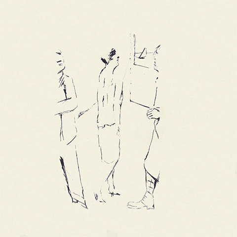
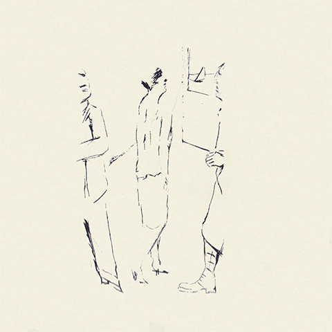
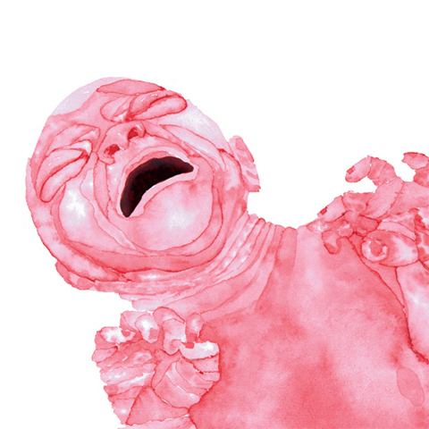
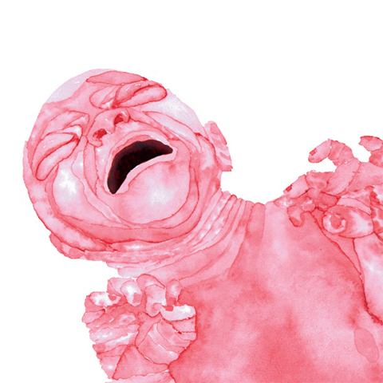

On prend toujours un risque en mariant le texte et l’image. L’association des deux se fait toujours au détriment de l’un ou de l’autre ; et, en définitive, de l’un et de l’autre.
À première vue, l’opposition pourrait sembler factice. D’une part, parce qu’il n’y a pas de différence véritable entre texte et image ; le premier n’est qu’une forme particulière de la seconde—en fait, il suffit qu’un texte soit composé dans une langue inconnue pour que celui-ci perde aussitôt son caractère singulier. Et d’autre part, parce que la notion de lecture est assez souple pour qu’on puisse, aussi pédantesquement soit-il, se permettre de « lire une image ».
Mais à y regarder de plus près, ce qui les distingue mérite amplement qu’on affirme leur opposition. Certes, texte et image sont de nature similaire, mais notre cerveau les interprète différemment. Et le meilleur moyen de rendre compte de cette différence est de restreindre la définition de lecture à son acception courante : apprendre à lire, c’est apprendre à reconnaître une séquence de signes graphiques que les conventions et les usages ont associé à des unités du langage.
C’est une différence considérable…

La lecture est une fonction détournée du langage. Mais, contrairement au langage, qui est une faculté innée de l’homme, la lecture est une activité récente—inutile de dire qu’elle ne dispose pas de système dédié ; c’est le produit d’un processus cognitif complexe qui, à condition de lire avec les yeux, commence dans le système visuel et se poursuit dans le système
L’exercice est exigeant
L’accès à l’état de flux dépend de l’expérience. Il est plus ou moins long selon qu’on lise peu ou beaucoup, et demeure inaccessible au débutant, puisque celui-ci ne possède pas le réseau synaptique qu’on se construit avec la pratique et qui facilite la circulation de l’information entre les différentes aires cérébrales.
Ainsi, lorsqu’une image exerce le stimulus suffisant pour capter l’attention du lecteur et l’extraire de sa lecture, elle fait l’effet d’un feu rouge sur une route nationale, et le condamne à devoir repasser par une phase de lecture légère avant de pouvoir regagner sa pleine
On peut recourir à divers artifices pour réduire la friction du texte et de l’image. La solution la plus élégante étant probablement de désaturer les images afin que celles-ci s’intègrent mieux au gris typographique du texte. Elles deviennent ainsi plus facile à ignorer. — Mais à quoi bon illustrer un texte quand on cherche délibérément à diminuer la force des images ?

Toute l’efficacité de l’image vient de ce qu’elle est un mode de communication quasi instantané—le délai entre stimulation et perception est si court qu’on le pourrait qualifier de nul. Une image se remarque de loin. Pour les raisons que j’énonçais plus haut, elle demande peu d’attention, donc peu d’effort—donc peu d’énergie. Et, on en retient la substance très facilement. Elle est aussi, à un certain niveau d’abstraction, un mode de communication
Or, c’est toute la difficulté de la cohabitation du texte et de l’image. L’image est intrusive. Ou, pour le dire autrement, il s’exerce une lutte inégale entre le texte, qui suppose rigueur et discipline, et l’image, qui a pour elle l’avantage de suivre l’inclination naturelle d’Homo
C’est pourquoi les livres pour enfants sont illustrés et que les livres « pour adultes » (entre guillemets) ne le sont plus. Les images sont un atout précieux pour l’enfant, un élément familier dans un monde inconnu.Elles sont, en revanche, autant de cahots sur la route du point de vue du lecteur avancé. C’est le paradoxe des roulettes du vélo que j’évoque à propos de Milou, police dessinée pour apprendre à lire. Pour faire court : quand on sait faire du vélo, on enlève les
On comprendra pourquoi j’ai longtemps hésité avant d’illustrer mon ouvrage. Ce n’est pas tant qu’il y avait un risque à marier le texte et l’image, mais parce que si j’aime l’image, c’est en partie pour me passer du texte. Néanmoins, il fallait bien penser à ceux qui n’aiment pas lire ; même s’il était plutôt question, une fois n’est pas coutume, de s’assurer que ce ne fût pas le texte qui gênât la lecture des


 



 
